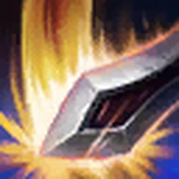

Garen ⚔️

Who is Garen?
Garen is a powerful fighter from Demacia in League of Legends, known for his durability, strength, and ability to lead in battle. He represents honor, justice, and the ideals of his kingdom.
Lore
Born into the noble Crownguard family, Garen was raised to serve Demacia. From a young age, he trained to become a warrior and quickly proved himself on the battlefield through discipline and courage.
As a leader of the Dauntless Vanguard, Garen fights to defend Demacia from threats both inside and outside the kingdom. He is especially known for his strong stance against magic, which Demacia fears.
Despite his strict beliefs, Garen struggles internally—especially because his sister Lux secretly uses magic. This creates a conflict between his loyalty to Demacia and his love for his family.
🎮 Gameplay
Garen Highlights ⚔️
Pro Garen Plays 🛡️
Personality
Garen is disciplined, loyal, and honorable. He believes in justice and always puts his duty above himself. However, deep inside, he questions whether his strict ideals are always right.
Role & Region
Role: Fighter / Tank (Top Lane)
Region: Demacia 🏰
Garen is known as a beginner-friendly champion but is still very powerful in
experienced hands due to his survivability and strong ultimate ability.
Abilities
-

Decisive Strike: Garen gains speed and delivers a powerful strike that silences enemies. -
Courage: Grants passive armor and magic resist, and reduces incoming damage.
-
Judgment: Garen spins rapidly, dealing damage to all nearby enemies.
-
Demacian Justice: Calls down a massive sword that executes low-health enemies.